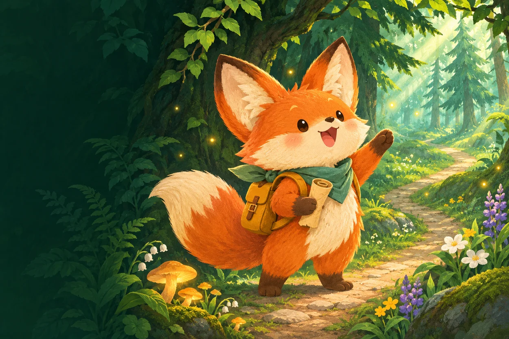

🌿 초등 4학년 어휘 탐험
모리와 함께어휘의 숲
아기 여우 모리와 숲길을 걸으며
단어, 사자성어, 속담을 발견해 봐요.
모은 어휘 씨앗
어떤 숲길로 갈까요?
숲길마다 표현 6개를 만나요.
🌱 탐험 수첩
모은 어휘 씨앗을 눌러 뜻과 예문을 다시 읽어 봐요.

🌿 초등 4학년 어휘 탐험
아기 여우 모리와 숲길을 걸으며
단어, 사자성어, 속담을 발견해 봐요.
숲길마다 표현 6개를 만나요.
모은 어휘 씨앗을 눌러 뜻과 예문을 다시 읽어 봐요.